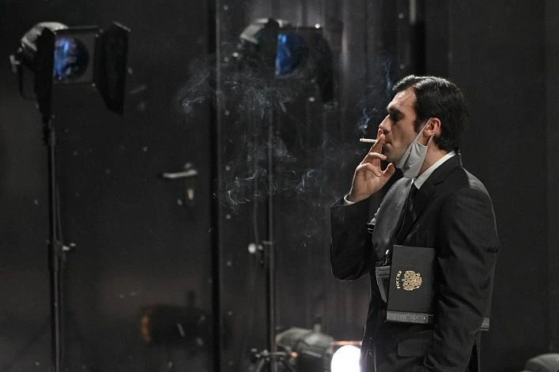
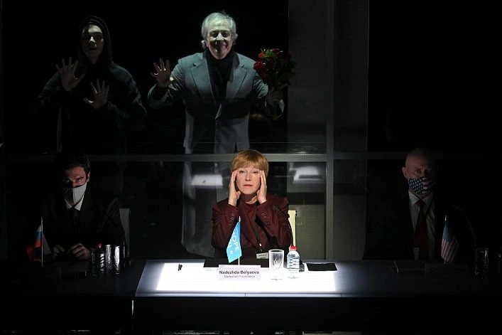
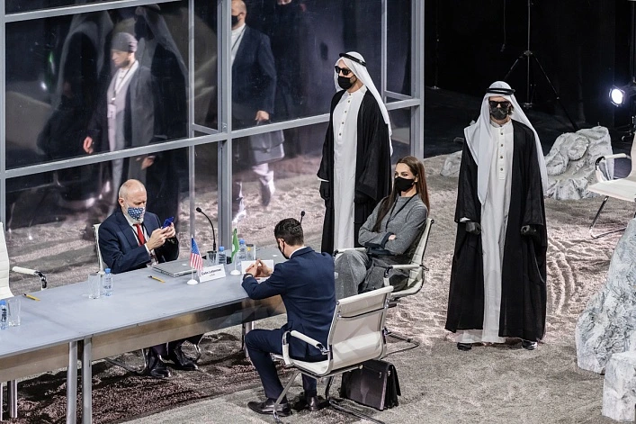
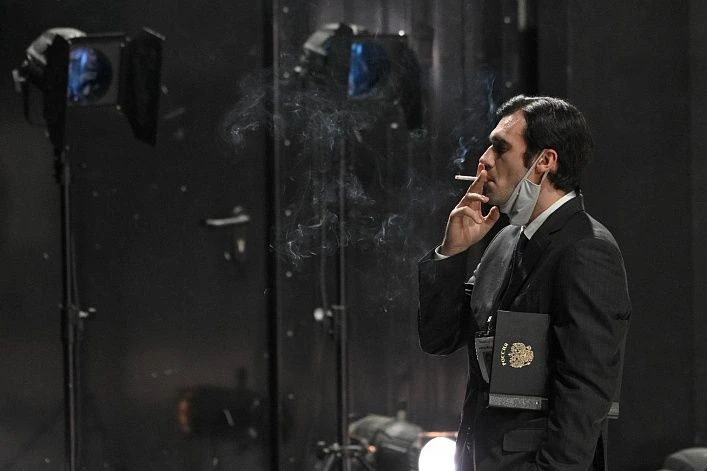
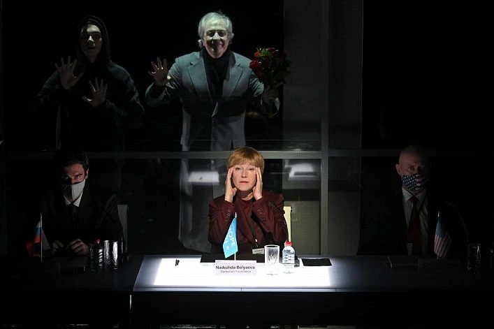
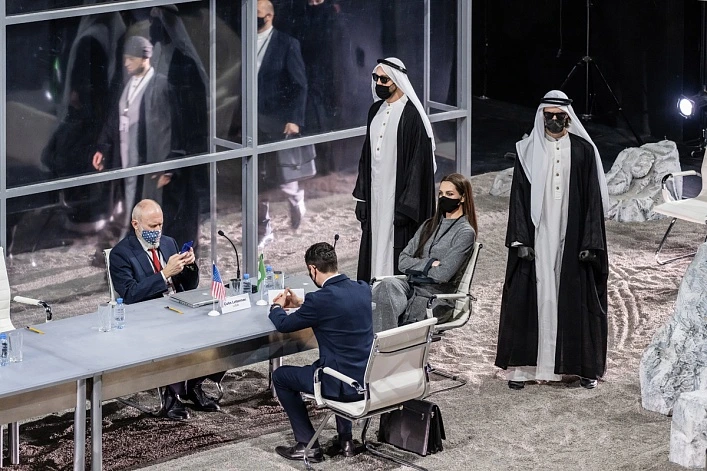

Честная женщина
Комедия о лжи, любви и высшем свете
Автор: Сомерсет Моэм
Режиссёр: Елена Волкова
Премьера: 5 апреля 2025
Продолжительность: 2 часа
Жанр: Комедия нравов
О спектакле
Остроумная комедия о том, как далеко может зайти «честная» женщина, чтобы сохранить лицо в высшем обществе. Лёгкий, ироничный, полный неожиданных поворотов — спектакль для тех, кто любит смеяться над собой.
В ролях
- Кристал — Мария Иванова
- Джон — Сергей Петров
- Миссис Куллинг — Ольга Соколова
Купить билет
Ближайшие даты: 18, 25 ноября 2025